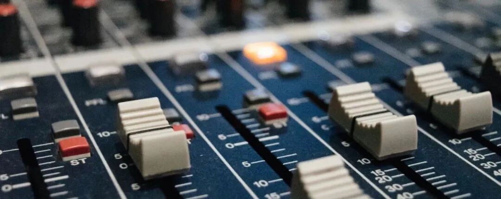
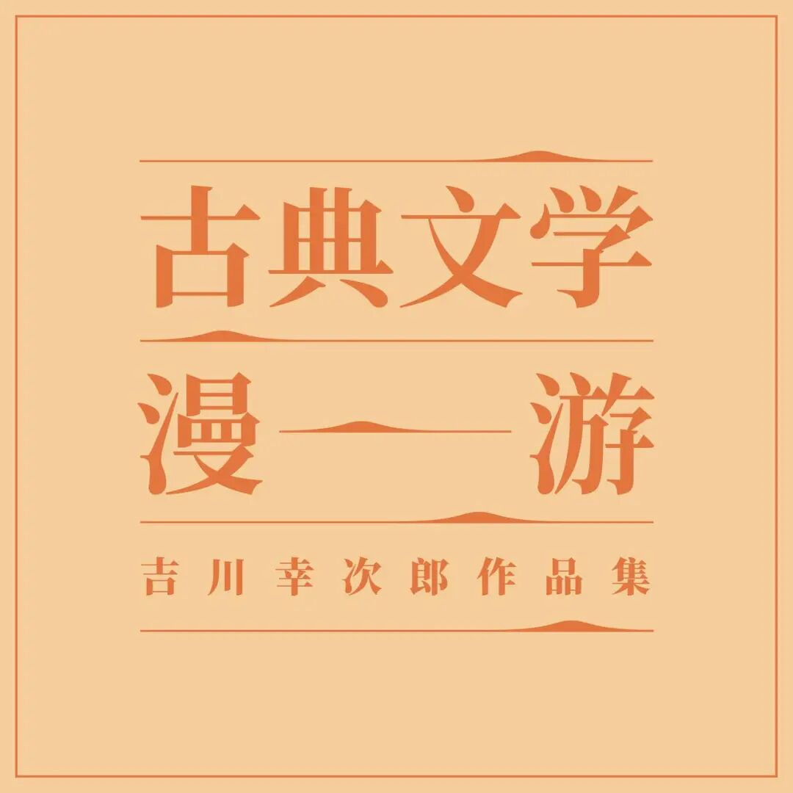

播客｜谍海轶闻：漫谈近现代法兰西情报往事
本期介绍预计阅读14分钟
近代以来的法国情报界并不平静。“德雷福斯事件”曾给法国社会带来巨大撕裂。在国际舞台上，法国情报部门因行事莽撞引发诸多丑闻。冷战期间，法国是两大阵营的情报交换的重要平台。从法国大革命说起，这场革命给法国情报界留下了什么遗产？绥靖年代，法国情报部门为何会夸大德国战备，影响历史走向？法国的情报网络怎样在莫斯科与西方之间扮演“第三条道路”？戴高乐又如何缔造了法国情报体系的不同风格？请听本期节目沙青青带来的精彩分享！
内容节选
本文为基于节目录音的口述稿，仅对语法与用词做部分修改。
**政治与派系斗争对法国情报工作的影响****
沙青青
法国的情报或者安全体系，较之其他国家有一个比较大的不同点，这也跟它的历史直接相关。我们可以拉到大革命前后，因为大革命前夕，法国国内的社会运动风起云涌，各种各样的小道消息、诋毁王室的文艺作品包括黄色文艺作品非常多，基于这一点，当时法国针对这些行为有一些审查或者是密探网络，对内维稳的功用是在第一位的。但是法国大革命之后，这一套东西非但没有萎缩，反而进一步加强了。因为革命之后，开始肃反了，抓内奸了。都是一帮保皇党，或者是外国的这种君主国干涉我们的势力。在这个情况下，其实就有所谓的革命恐怖，对内肃反成了法国情报部门或者是安全部门的首要工作。
程衍樑
当时罗伯斯庇尔成立了公安委员会，还有治安委，治安委其实就是用大量的秘密警察、密探来监视所有人，而且大肆地逮捕处决反对者，断头台应该大概有一年的时间都被大量应用。因为雅各宾派执政的时间很短，巴黎市中心断头台砍了1.7万个人。在一档播客《独树不成林》中，仲树老师有一期专门聊断头台的例子，就是断头台作为一种景观，它消解了砍头的意义，我觉得这个点还是蛮妙的。
以前的砍头，比如说公开处决，包括中国的凌迟处决，它有震慑恐怖的作用，但同时也是一种狂欢，市民可以来像过节日一样参与的这种氛围。但断头台这种机器被发明出来了，人真的变成数字了，你不知道这是谁，突然一刀，也看不清他是怎么受折磨的，只发现他们一个个鱼贯而入，下饺子一样，整个改变了处刑对社会的意义。这种视角非常有意思。
沙青青
确实是这样的，但是这也反映出当时法国的社会氛围。之后无论是拿破仑时代，还是法国历届共和国，你都会发现，法国的情报部门被政治影响非常大，这成为了它直到今天都无法摆脱的一个传统。
程衍樑
是被政治影响，就是政治人物来操控吗？
沙青青
也不一定是政治人物来操控，就是情报机关涉入国内政治很多。当然之前我们在「谍海轶闻」也聊过，英国、美国、苏联，其实都有所谓的国内政治因素的影响。
程衍樑
尤其是苏联后期。
沙青青
但是法国的问题是，政争，或者各个派系之间的恶斗，从来就是它情报部门非常重要的主线，甚至也影响了对外情报工作。法国情报部门有一本回忆录《谍海孤舟》，它除了讲述戴高乐时代前后法国情报部门的一些情况，以及在北非，在殖民地地区做的一些情报工作之外，很大一个主轴也谈到了内部斗争。比较典型的一个例子，20世纪60年代戴高乐重新掌权之后，他的政策发生了一个转向，尤其是要从原来的一些殖民地当中能够尽快地脱身，比如说从阿尔及利亚摆脱出来。
但当时的情报部门里可能也分了一些相关的不同派别，有些主张撤走，有些主张要继续坚持，然后就引发了内部的一些整肃。追随戴高乐的撤走派可能就对希望赖着不走的这批人进行一些内部权力斗争的清肃，这个情况在回忆录里面也有非常多的描写，其实从这一点就能看出来，这就是法国情报部门非常重要的一个底色，或者是一种传统。这种传统在之后的很多冷战时期的重要事件当中也有所体现，我们节目后面也会慢慢地提到。
绝对掌控：戴高乐缔造的情报体系
程衍樑
在欧洲历史上，20世纪的两次战争对每个国家都有非常大的改变。但德国更特殊一点，它作为战败国是天翻地覆的改变。虽然二战法国是战胜国，但经历了维希法国这样很屈辱的时期。那法国的这些情报机构，它在20世纪的漫长过程当中，是怎样收束对于情报界掌控的？
沙青青
我觉得戴高乐是一个非常重要的角色，因为在维希法国成立之后，戴高乐也成立了他自己的一套情报体系。1940年7月份，他建立了一个情报部门叫中央情报与行动局，这个部门就成为前面一再提到的法国对外情报总局的前身。这个单位实际上是负责自由法国对外的一些情报搜集工作，同时也跟其它情报机构，无论是英国还是美国的，做一些情报的合作和交流。
我们都知道，法国毕竟在亚洲、非洲有广大的殖民地。这些殖民地的区域能够提供很多情报，如果相关盟国，英国和美国要派遣情报人员过去的话，可能也需要得到来自于自由法国的一些协助，而提供这个协助的就是中央情报与行动局，甚至它跟国民政府在二战期间也尝试进行过一些合作。我看到过国内有学者写过这方面的论文，所以它的触及面和合作面相对来说还是比较广的。
程衍樑
我们谈到像英美国家的这些情报体系，包括像苏联情报体系的时候，会经常提到情报机构的首脑有时候权力过大，或者说他待的时间够长，最典型像胡佛局长，经历那么多任总统，自己是一个不倒翁，甚至总统会忌惮他掌握的这些材料信息。但是不是戴高乐之后，第五共和国时代，法国总统对于情报的权力是一种绝对掌控的状态？
沙青青
对，相对来说，在萨科齐之前，它是有所谓的国家情报委员会，只管六大情报部门，同时直接向总统负责。而且由于法国的政治对情报机构的干预或者影响也非常多，这些机构主要的负责人基本上都是一朝天子一朝臣的状态。
程衍樑
尤其法国总理只有两年任期，你不可能有时间去熟悉。
沙青青
不可能有时间熟悉，而且因为外交和国安军事这一块是总统直辖的，总理那边基本没有插手的空间。同时总统又非常在意这些重要的情报局人员的调整，所以基本上人员是跟着总统走的。戴高乐直接参与了这样一个情报部门的缔造和运营的过程，所以从戴高乐开始，最高领袖，或者总统一直是对这些重要的情报部门有直接干预的传统，包括像我们前面提到的二战期间，它是所谓的中央情报与行动局，到了1946年的时候，它就被改造了，变成了对外情报与反间谍局。
当然随着法国进入冷战之后，它也进行了一系列调整。到了7、80年代以后，它的反间谍功能就被拆出来了，给了当时的领土监护局，也就是现在的对内安全总局，基本上是这样一个流变的过程。你可以发现，法国的这些情报机构，相对于军情五处、军情六处，相对于FBI和CIA，它的机构调整频率是比较高的，而且基本上每过十年或二十年，它的一些权责就会重新划分。最近一次划分是在2012年前后，萨科齐对情报机构又重新做了一次重组。
法国在「瑞安行动」与「古巴导弹危机」中的角色
程衍樑
法共在二战中，有一个著名的变节问题。法共当时有很多人，在更早的时候，其实跟纳粹之间（关系），在很多被占领国家其实都有（清算），但并没有在法国得到清算，所以很多人也会认为可能是戴高乐和法共之间的一种利益交换。刚刚讲到法共，其实从它跟莫斯科的关系，包括从20年代以来在法国的存在感，到后来第五共和国时代，法国政府或者情报部门是怎么去掌控他们的？
沙青青
我前面讲过，法国情报部门始终把对内的政治安全列为它的第一要务，所以其实对法共的监控是非常全面的。当时虽然苏联在法国境内通过法共，或者相关的一些国际交流也好，一直有一些相关人员担负情报搜集的作用。但某种程度上来说，这是被法国情报部门容忍的一些行为，而且这些行为也在发挥巴黎跟莫斯科之间的back channel（秘密渠道）。包括涉及到一些第三国的信息，或者是西方其它国家的信息，有可能都会通过法国来进行传递。
最典型的一个例子是，之前我们在聊1983年危机的时候，提到过有一个克格勃驻英国的人员，当时等于是向欧美方面投诚了，向英国、美国方面提供了大量的涉及到1983年瑞安行动的情报，被认为是非常重要的角色。他叛逃之后，其实出现一个问题，就是他是被抓回苏联，又在苏联本地叛逃，当时还搞了一次营救工作，跟拍电影一样，把他想办法偷渡到芬兰去，然后把他救回英国。后来有个问题，他的妻儿还留在苏联。英国、美国方面都觉得他提供的情报非常重要，值得把他的老婆、孩子也搞过来。怎么样来做，向苏联方面传递信息，当时就是通过法国。
当时他们通过驻在法国的外交和情报人员，找到了他们知道的苏联克格勃人员传递的相关信息，就告知说，我们想交换他的妻子和孩子，把他家人能够换到西方国家来。这样一个信息的传递工作是在巴黎做的，是在法国做的。你也能看出来，当时法国也好，巴黎也好，在冷战期间发挥了这样一种作用，确实是有它特殊的位置在。这也解释了我前面提到的，为什么像法国的一些情报部门会容忍相关人员继续潜伏或者待着。
程衍樑
就把巴黎变成一个谍都情报交易的中心点。而且还可以提到一件事情，在冷战中至关重要，古巴导弹危机。它其实跟法国的间谍网也有一些直接关联，主要是法国当时在古巴布下的对外间谍网络，尤其是古巴间谍网的一个指挥者，好像是法国当时驻华盛顿的一个代表，他应该是最早通知了美国人，就是说苏联的货船频繁地往返于苏联和古巴北部的一个港口之间，并且卸下很多奇怪的大型货物。
应该是在1962年的夏天，8月中旬的时候，这个代表去了一趟古巴，而且见了几个当地的谍报员，那几个谍报员已经搞清楚了，说运进去的这些东西就是导弹，但是还在讨论到底是进攻性导弹还是防御性导弹。如果是进攻性导弹，就意味着它部署的可能就是对美国领土为目标的中程导弹；如果是防御性导弹，其实美国是无法提出异议的。而且苏联本来就一直在给这些第三世界的朋友们提供常规武器，包括像一些地对空导弹。所以这个事情当中，法国因为1962年还没有退出北约，这时候还是一种盟友的关系，所以驻华盛顿代表就将苏联在古巴部署导弹的事情告知了巴黎，同时通过巴黎又告知了美国的中央情报局。
沙青青
法国会把它掌握的一些相关情报当作跟美国，包括苏联作为谈条件的一种筹码。
程衍樑
跟两边都眉来眼去，然后不断地换取自己的价值。
本期嘉宾
程衍樑（微博@GrenadierGuard2）
沙青青（微信公众号：13号埋立地）
本期提到
点击文末“阅读原文” 查看本期豆列
传奇办公室 / 法国对外安全总局（DGSE） / 法国领土监护局（DST） / 罗伯斯庇尔 / 摩洛哥危机 / 泰奥菲勒-德尔卡塞 / 莫里斯-鲁维埃 / 阿尔弗雷德-德雷福斯 / 左拉 / 克列孟梭 / 戴高乐 / 萨科齐 / 亨利-吉罗 / 迈赫迪-本-巴尔卡 / 穆莱-哈桑二世 / 弗朗索瓦-密特朗 / 雅克-杜克洛
《谍海孤舟》《悄悄的自杀》《苏联间谍在法国》
👂🏻 文稿、排版：Yo编辑：思钊
谍海轶闻｜1983危机：我们差点在平行世界捡瓶盖

谍海轶闻｜广播攻势与舆论渗透：冷战中的宣传战

